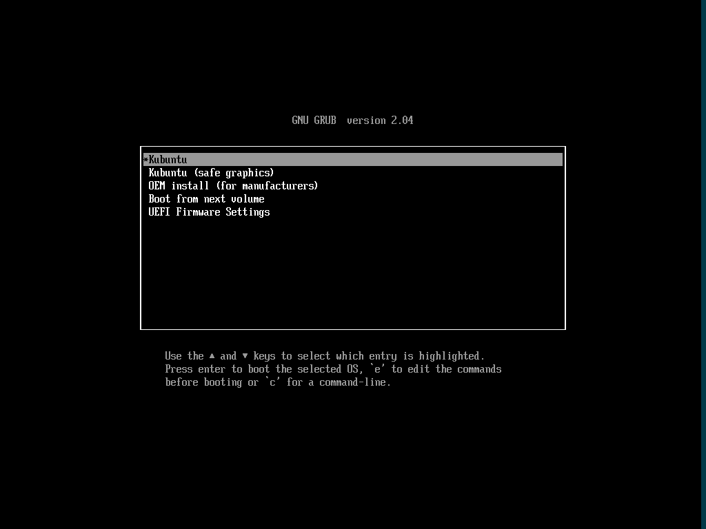
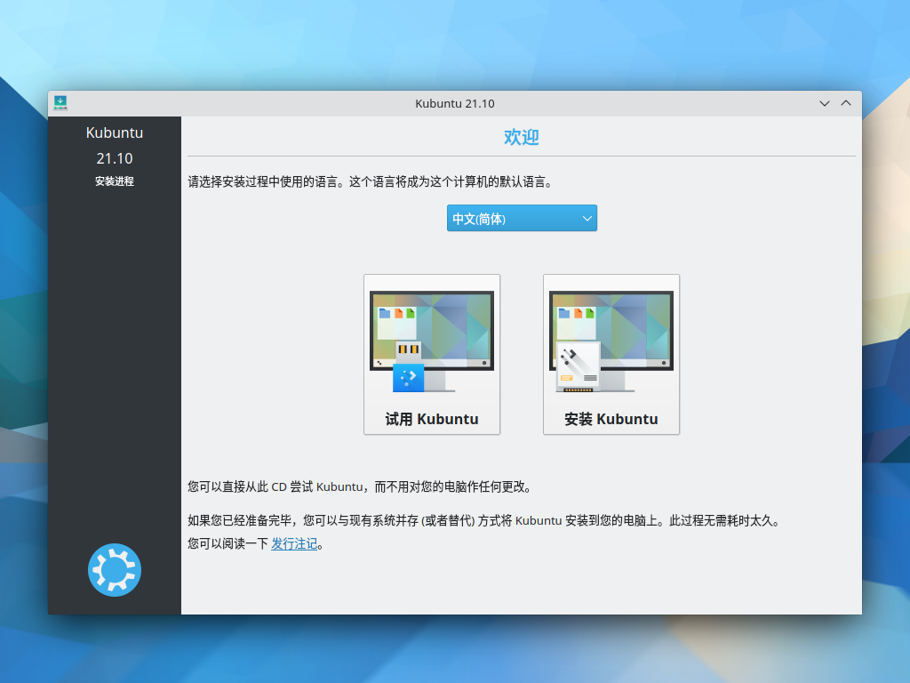
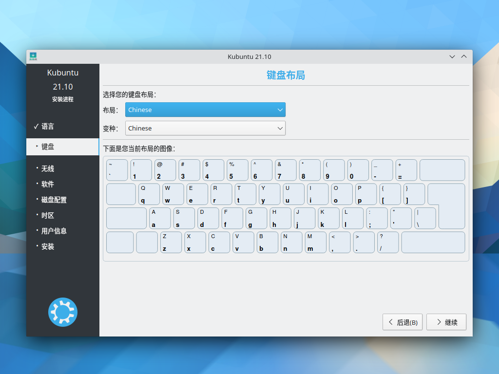
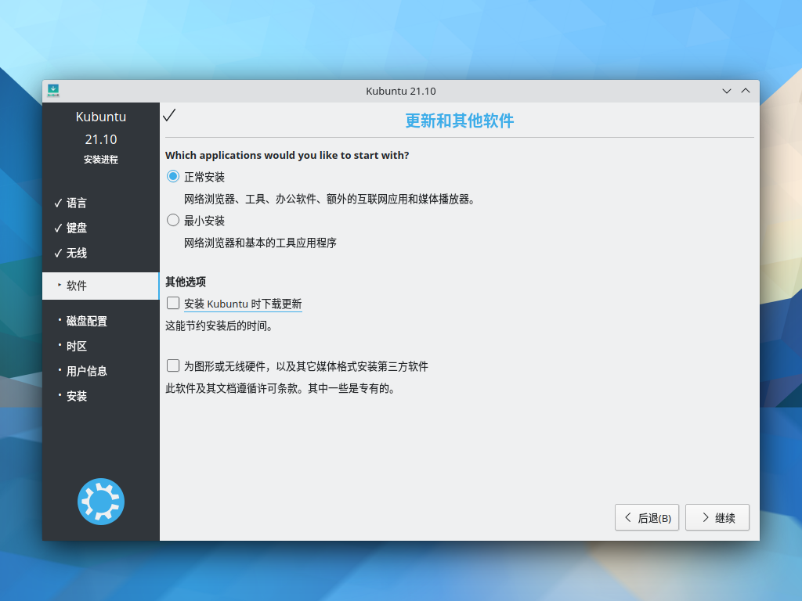
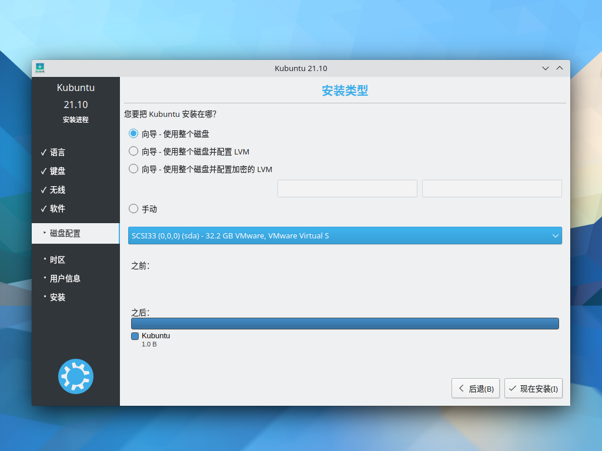
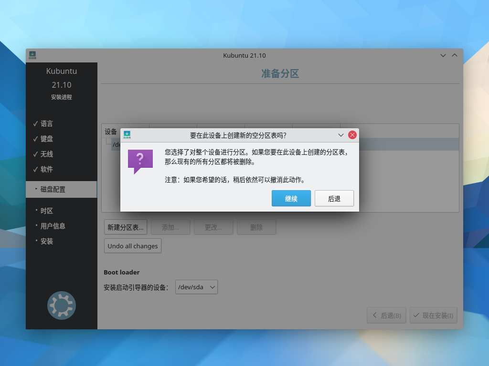
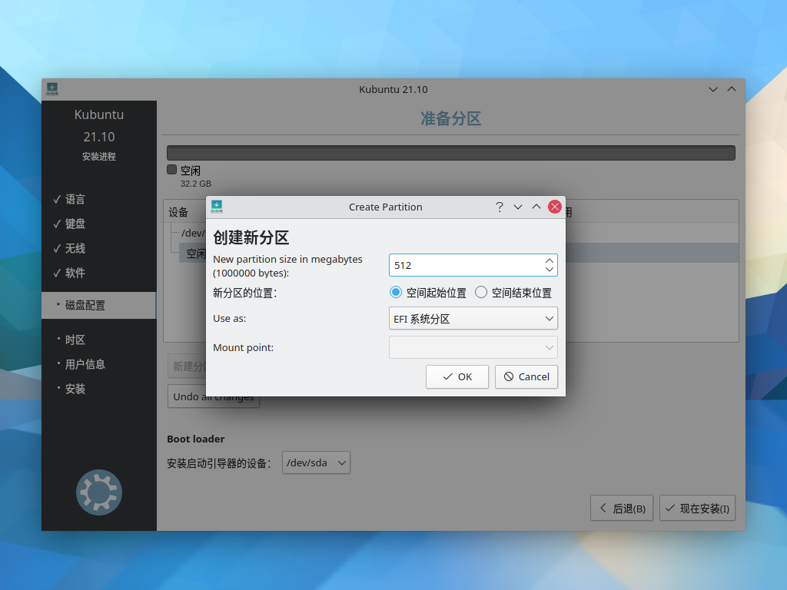
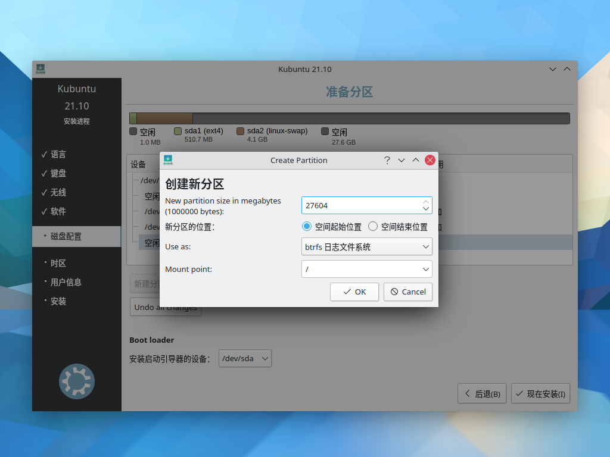
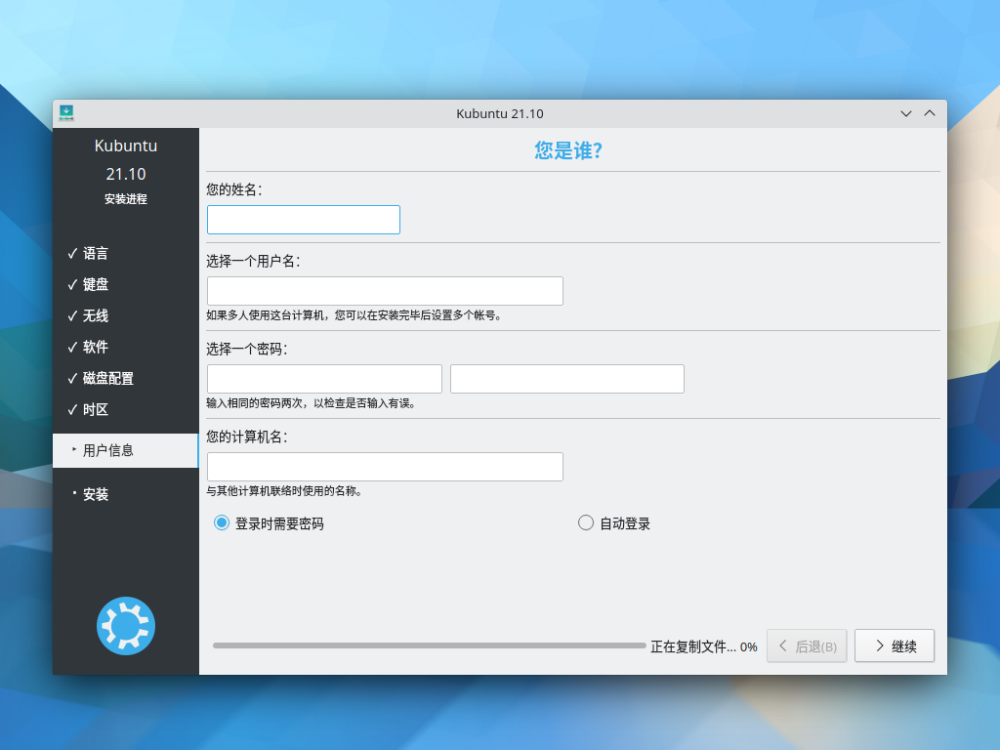
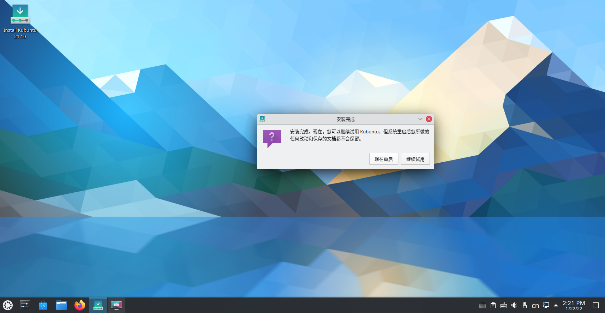

安装 Kubuntu¶
简介¶
Kubuntu，是众多 Ubuntu 分支的一种，它采用 KDE Plasma 桌面为其默认桌面环境。它和 Ubuntu 采用同样的底层系统和软件库。基本上，Kubuntu 和 Ubuntu 没有太大的差异，只是默认桌面系统采用 KDE，并非 GNOME 或 Unity。
获取 ISO 镜像¶
Kubuntu 和 Ubuntu 有三种方式获得镜像文件：
- 直接前往官网下载 ISO 文件。
- 参照前文，从 openTUNA 镜像站下载 ISO 镜像文件。
- 使用 torrent 下载 ISO 文件。你可以在 Alternative downloads 页面中找到适用于 BitTorrent 或其他标准 BT 下载器的 torrent 文件。有关于此，请阅读 XIU2/TrackersListCollection。
校验文件¶
你可以参照前文对 ISO 进行校验。官方文件的校验和（SHA256）可在此处找到：
kubuntu-21.10-desktop-amd64.iso: 4a56cfc43e0f4ead6b7e66b3da67ab22d96c46dc090190a06d2848b6e03fe02a
kubuntu-20.04.3-desktop-amd64.iso: 11bca68f3366b11c7887666124e0155c6e2fbe1350ab14f25cd15299ac8f68b5
安装¶
安装界面¶
在配置完虚拟机设置或插入安装介质并重启系统后，你会进入 GRUB 引导界面，请选择 Kubuntu。

欢迎¶
登录系统后，你会看到欢迎界面，请在此页面将语言调成“中文（简体）”，然后点击“安装 Kubuntu”进行安装系统：

你可以选择“试用 Kubuntu”，Kubuntu 的 DVD 镜像包含了一个完整的 Live 环境，从 Live 环境安装系统可以操作的空间更大。
在进入 Live 桌面后，点击桌面的 “Installation Kubuntu 21.10” 即可开始安装。在安装过程中，如果你不需要联网，请断开网络连接，KUbuntu 可能会在最后一步刷新软件源的时候卡住（网络延迟过高）。
键盘布局¶
请确认键盘布局是否正确：

更新和其他软件¶
在“更新和其他软件”页面中，选择“正常安装”，如果你不需要安装时更新系统，请取消勾选“安装 Kubuntu 时下载更新”；如果你需要为提前设备安装 NVIDIA 独立显卡驱动、多媒体解码器和无线固件等内容，你可以勾选“为图形或无线硬件，以及其他媒体格式安装第三方软件”：

磁盘分区¶
Attention
Kubuntu 的安装流程与其他系统略有不同，它会在用户确定并接受分区方案后会立即进行分区。
你可以选择使用自动分区，但是请注意选择正确的空闲磁盘分区：

如果需要手动分区请选择“手动”：
手动分区¶
当你选择将 Kubuntu 安装至一个新磁盘时，它会提醒你创建一个磁盘分区表：

一般地，你需要以下分区：
| 分区名 | 挂载点 | 建议大小 | 分区类型 |
|---|---|---|---|
| EFI | - | 512MB | EFI 系统分区 |
| swap | - | 详见下表 | 交换空间 |
| / | / | 20GB 及以上 | btrfs、ext4 均可 |
| /home | /home | 依照实际情况而定 | btrfs、ext4、xfs 均可 |
SWAP 分区推荐大小如下所示：
| 系统物理内存（RAM）大小 | 推荐的 swap 分区大小 | 推荐的 swap 分区大小（如果需要休眠） |
|---|---|---|
| 小于 2GB | RAM 的两倍 | RAM 的三倍 |
| 2GB - 8GB | 和 RAM 相同 | RAM 的两倍 |
| 8GB - 64GB | RAM 的 0.5 倍 | RAM 的 1.5 倍 |
| 大于 64GB | 基于实际工作负载而定 | 不推荐休眠 |
点击“空闲”区域即可创建新的分区：
创建 EFI 分区（建议大小 512MB）：

创建系统交换分区：
创建根分区（此处使用 btrfs 文件系，你也可以选择 ext4）：

如果你需要修改或删除分区，请点击该页面的相关按钮。确认分区无误后，点击 “现在安装”，安装器会提醒你最后确认一次文件系统变更。
接下来请选择你所在的时区和地区：

您是谁？¶
然后设置你的用户全名、用户名、用户密码、主机名。如果不需要自动登录，则你需要为系统设置密码：

完成！¶
崭新的 Kubuntu 很快就会安装完成，安装结束后请拔出 U 盘并重启计算机进入新系统。


创建日期: 2022-01-22